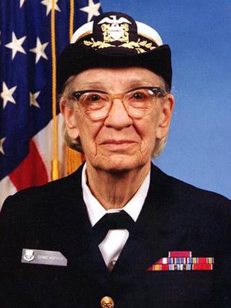
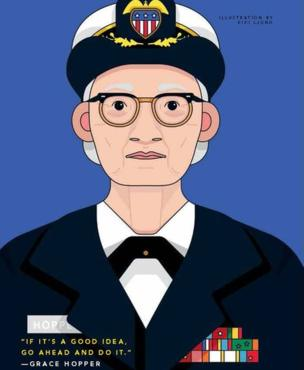

Grace Hopper
A Mulher que tornou a linguagem do computador humana

Aqui está uma linha do tempo da vida do Dr.Borlaug:
- 1906 - 9 de dezembro em Nova Iorque, Estados Unidos
- 1928 - A futura analista de sistemas se graduou em Matemática e Fisica
- 1930 - Conclui seu mestrado na Universidade de Yale
- 1931 - Começou a ensinar Matematica no vassar
- 1934 - tambem na Yale University conquistou seu Ph.D em matematica
- 1934 - É publicada sua dissertação "Novos Critérios de Irredutibilidade".
- 1941 - Promovida a professora associada
- 1943 - Grace tirou uma licença de Vassar e foi empossada na marinha dos Estados Unidos
- 1944 - Formou-se como a primeira da turma e foi designada para a Bareau of ships Computation Project da Harvard University como tenente junior
- 1949 - Tornou-se empregada da corporação Eckert-Mauchly Computer como matematica sénior e compõs a equipa de desenvolvimento UNIVAC I
- 1952 - Teve um compiladr operacional. "Ninguem acreditava" disse Grace Hopper- "Eu tinha um compilador rodando e ninguem lhe tocava. Eles me diziam que computadores apenas podiam fazer aritmetica"
- 1954 - Foi nomeada a primeira diretora de programação automatica, e seu departamento divulgou algumas das primeiras linguagens de programação baseadas em compilador, incluindo ARITH-MATIC, MATH-MATIC e FLOW-MATIC
- 1979 - Prêmio W. Wallace McDowell
- 1988 - Prêmio Emanuel R.Piore IEEE
- 1991 - Medalha nacional de Tecnologia e Inovação
"Se é uma boa ideia,prossiga e leve-a adiante. È muito mais facil pedir desculpas do que conseguir a permissão necessária".
